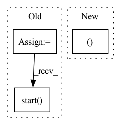

Pattern ID :12101
Before Change
def a3c(rank):
c = TestA3C.c
world = get_world()
reduce_group = world.create_rpc_group("reduce_group", ["0", "1"])
actor = smw(Actor(c.observe_dim, c.action_num)
.to(c.device), c.device, c.device)
critic = smw(Critic(c.observe_dim)
.to(c.device), c.device, c.device)
actor_g_server = PushPullGradServer("actor_g_server", reduce_group,
reduce_batch_size=2)
critic_g_server = PushPullGradServer("critic_g_server", reduce_group,
reduce_batch_size=2)
if rank == 0:
actor_m = Actor(c.observe_dim, c.action_num).to(c.device)
critic_m = Critic(c.observe_dim).to(c.device)
actor_g_server.manage_model(actor_m,
t.optim.Adam(actor_m.parameters(),
lr=1e-3))
critic_g_server.manage_model(critic_m,
t.optim.Adam(critic_m.parameters(),
lr=1e-3))
if rank in (0, 1):
actor_g_server.start()
critic_g_server.start()
a3c = A3C(actor, critic,
nn.MSELoss(reduction="sum"),
(actor_g_server, critic_g_server),After Change
critic = smw(Critic(c.observe_dim)
.to(c.device), c.device, c.device)
// in all test scenarios, all processes will be used as reducers
actor_g_server, critic_g_server = grad_server_helper(
lambda: Actor(c.observe_dim, c.action_num),
lambda: Critic(c.observe_dim),
learning_rate=5e-3In pattern: SUPERPATTERN
Frequency: 4
Non-data size: 3
Instances Fragment ID: 40813724
Project Name: iffix/machin
Commit Name: a0808cd7c6aec893be667f2ef3ff9b5ceac29f02
Time: 2020-07-19
Author: hanhanmumuqq@163.com
File Name: test/frame/algorithms/test_a3c.py
M Class Name: TestA3C
N Class Name: TestA3C
M Method Name: a3c(0)
N Method Name: a3c(1)
M Parent Class: object
N Parent Class: object
M File Name: test/frame/algorithms/test_a3c.py
N File Name: test/frame/algorithms/test_a3c.py
M Start Line: 73
M End Line: 103
N Start Line: 79
N End Line: 89
Before Change
round_idx + 1, self.global_round))
activate = threading.Thread(target=self.activate_clients)
listen = threading.Thread(target=self.listen_clients)
activate.start()
listen.start()
activate.join()
listen.join()
After Change
activate.start()
while True:
sender, message_code, payload = PackageProcessor.recv_package()
update_flag = self.on_receive(sender, message_code, payload)
if update_flag:
break Fragment ID: 40813718
Project Name: smilelab-fl/fedlab
Commit Name: 66cdbfe7b10494d8cf8d6260214b0f8cb75b34ea
Time: 2021-07-03
Author: 928255708@qq.com
File Name: fedlab_core/server/topology.py
M Class Name: ServerSynchronousTopology
N Class Name: ServerSynchronousTopology
M Method Name: run(1)
N Method Name: run(1)
M Parent Class: Topology
N Parent Class: ServerBasicTopology
M File Name: fedlab_core/server/topology.py
N File Name: fedlab_core/server/topology.py
M Start Line: 92
M End Line: 99
N Start Line: 90
N End Line: 96
Before Change
pod_addresses = f"{{"pod0": ["0.0.0.0:{worker_port}"]}}"
// create a single worker runtime
worker_process = multiprocessing.Process(
target=_create_worker_runtime, args=(worker_port,)
)
worker_process.start()
// create a single gateway runtime
gateway_process = multiprocessing.Process(
target=_create_gateway_runtime,After Change
def test_dry_run_of_flow(port_generator, protocol):
worker_port = port_generator()
port = port_generator()
worker_process, gateway_process = _setup(worker_port, port, protocol)
// send requests to the gateway
c = Client(host="localhost", port=port, protocol=protocol)
dry_run_alive = c.dry_run() Fragment ID: 40813716
Project Name: jina-ai/jina
Commit Name: ef961e96c663954c523cc9376d2221b7c150652b
Time: 2022-06-24
Author: deepankar.mahapatro@jina.ai
File Name: tests/integration/runtimes/test_gateway_dry_run.py
M Class Name: AnonimousClass
N Class Name: AnonimousClass
M Method Name: test_dry_run_of_flow(2)
N Method Name: test_dry_run_of_flow(2)
M Parent Class:
N Parent Class:
M File Name: tests/integration/runtimes/test_gateway_dry_run.py
N File Name: tests/integration/runtimes/test_gateway_dry_run.py
M Start Line: 56
M End Line: 81
N Start Line: 78
N End Line: 80
Before Change
resource_manager = Manager()
self.waves = resource_manager.list()
path_splits = list()
process_list = list()
for i in range(loading_processes):
path_splits.append(self.list_of_eligible_wave_paths[
i * len(self.list_of_eligible_wave_paths) // loading_processes:(i + 1) * len(
self.list_of_eligible_wave_paths) // loading_processes])
for path_split in path_splits:
process_list.append(Process(target=self.ram_loader_process, args=(path_split,), daemon=True))
process_list[-1].start()
for process in process_list:
process.join()
self.waves = list(self.waves)
print("{} eligible audios found".format(len(self.waves)))After Change
self.waves = list()
for path in tqdm(self.list_of_eligible_wave_paths):
with open(path, "rb") as audio_file:
wave_orig, _ = sf.read(audio_file)
self.waves.append(self.preprocess_ap.audio_to_wave_tensor(wave_orig, normalize=True, mulaw=False))
print("{} eligible audios found".format(len(self.waves)))
Fragment ID: 40813713
Project Name: digitalphonetics/ims-toucan
Commit Name: bf3c0336c113f8ff2464d60bc18f46c482b2000e
Time: 2021-04-04
Author: florian.lux@ims.uni-stuttgart.de
File Name: MelGAN/MelGANDataset.py
M Class Name: MelGANDataset
N Class Name: MelGANDataset
M Method Name: __init__(5)
N Method Name: __init__(5)
M Parent Class: Dataset
N Parent Class: Dataset
M File Name: MelGAN/MelGANDataset.py
N File Name: MelGAN/MelGANDataset.py
M Start Line: 47
M End Line: 71
N Start Line: 26
N End Line: 61